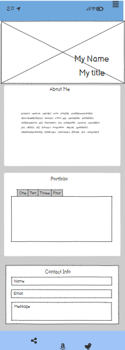

My plan will be to make a one-page Art Gallery consisting of Ai Art I have generated.
WELCOME: This will be a short personal introduction with my name and title with a background photo of a computer screen with an art gallery.
ABOUT ME: This section will speak on my art, why I do my art, and how I want to share my art with the world.
PORTFOLIO: This section will be a visual view of watermarked one-of-a-kind Ai art I have generated and personalized.
CONTACT: This section will house a contact form to connect with me via email and LinkedIn, and GitHub.
